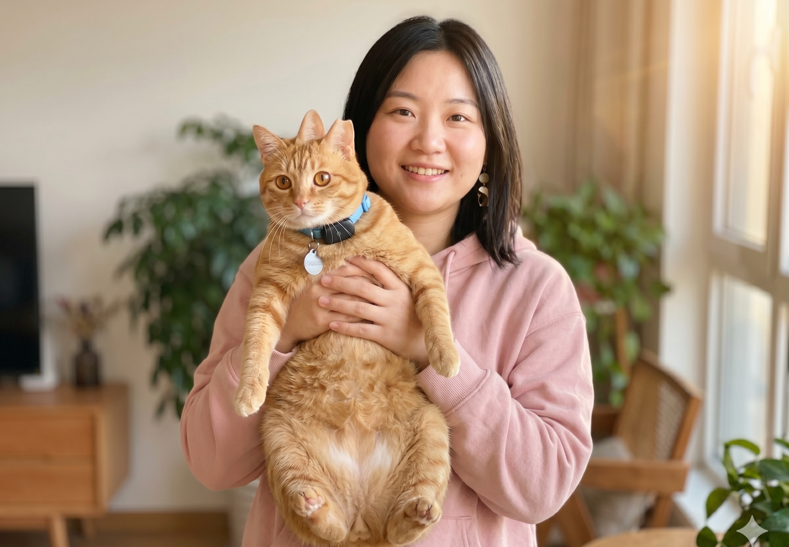

🐱❤️🥹
找回啦
致每一个陪我熬过这几天的人

回家后的第一顿饭
写在最后
三天 · 真的太长了。
每一个小时我都在刷小红书 刷微博 刷互助群 刷监控。
谢谢每一个转发的姐妹 谢谢评论区帮我喊话的姐妹。
宝贝现在睡在我脚边。一切都好。
也谢谢救助博主姐妹愿意露脸道歉 这事算是体面收尾 大家都散了吧 都是爱猫的人。
🙏 一一谢过
- @老中医诊脉中 — 群里劝架的叔 谢您
- @鼠鼠不冒泡 — 帮我整理了所有线索
- @嗯哼一下 — 第一个喊"先验芯片"的姐妹
- @朝阳铲屎 — 转了寻猫帖到三个救助群
- @朝阳爱宠宠物医院 — 一直接我电话
- MaoTrack 客服 — 紧急定位帮我锁了位置
- 还有所有匿名转发的小猫咪们🐾
热门评论
🐭
@鼠鼠不冒泡
看哭了 这只猫真的可爱
12 分钟前 · ❤ 8.7k
😺
@momo
这个城市真的还是温暖的❤️
22 分钟前 · ❤ 5.2k
— 没有更多了 —